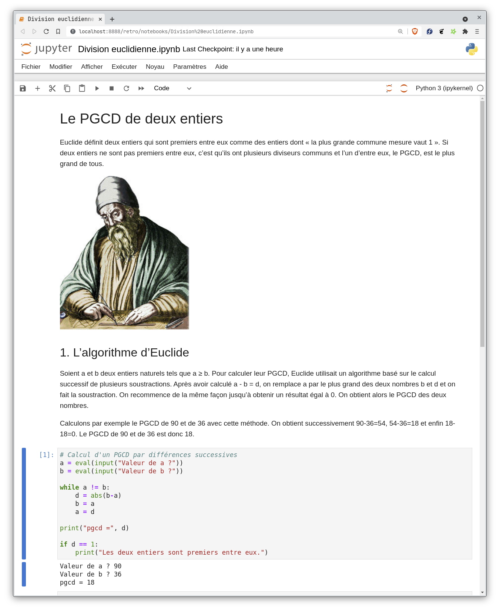

État de l’art: l’écosystème Jupyter
Contents
2. État de l’art: l’écosystème Jupyter#
Jupyter est un écosystème de logiciels libres, de protocoles ouverts et de standards dont le but est de faciliter le travail des ingénieurs, scientifiques, étudiants et enseignants, depuis la phase exploratoire de leurs projets jusqu’à la communication des résultats.
Depuis ses débuts en 2014, le projet Jupyter a connu une adoption très rapide dans tous les secteurs, et compte aujourd’hui des millions d’utilisateurs dans le monde. Jupyter est devenu la lingua franca des professionnels du calcul scientifique, des ingénieurs en formation aux chercheurs en passant par les « data scientists » et ingénieurs dans l’industrie. En dehors du monde professionnel, Jupyter est également un standard de facto dans l’enseignement.
En 2018, les développeurs du projet Jupyter ont été honorés du prix « ACM Software System Award », attribué tous les ans depuis 1983 à une institution ou à une ou plusieurs personnes sélectionnées pour le développement d’un logiciel ayant eu une influence sur le long terme. Les lauréats précédents comprennent notamment UNIX, le World Wide Web, Java, etc.
Le notebook (carnet interactif)#
Le composant le plus populaire de Jupyter est le notebook, une interface d’édition de documents interactifs entremêlant éléments narratifs, formules, code exécutable, visualisations, avec la possibilité de réaliser des diapos ou des mini-applications interactives.
Ce format s’est avéré particulièrement utile dans le contexte de l’enseignement des sciences car l’interactivité offerte implique l’apprenant dans une démarche d’apprentissage actif.
Le notebook est aussi très utilisé par les professionnels dans la phase exploratoire de leur travail, car il permet d’itérer rapidement en fournissant des résultats visuels immédiats dans l’interface où se fait le développement. C’est justement de là que vient le nom du projet qui devait être une version électronique des carnets de recherche utilisés traditionnellement en sciences physiques.
{kind=link}
Carnet de recherche de Galilée (1610) sur ses observations de Jupiter et de ses quatre principaux satellites, dont les schémas ont inspiré le logo du projet Jupyter.
Le concept de notebook s’inscrit dans le paradigme de la « programmation lettrée » (litterate programming) prônée par le pionnier de l’informatique Donald Knuth. Dans ce paradigme, l’auteur est encouragé à s’adresser en premier lieu à ses lecteurs en traduisant le fil de sa pensée sous la forme d’une narration, le programme n’étant qu’un sous-produit de cette narration. Les premiers exemples de notebooks ont émergé dans les années 1990 dans des systèmes comme Maple et Mathematica.
Ce qui distingue le notebook Jupyter, c’est le fait d’être libre, standardisé, basé sur des technologies web ouvertes, et agnostique au langage de programmation. Jupyter (JUlia, PYThon, R) peut être utilisé avec ces trois langages scientifiques ainsi que des centaines d’autres. Ces propriétés sont à l’origine de son adoption à très large échelle.
Adoption#
Le projet Jupyter, qui est né du projet plus ancien IPython, est issu du monde académique où il y est très adopté, que ce soit pour l’enseignement ou pour la recherche. Des supercalculateurs aux cours d’introduction à la programmation, la plupart des universités font aujourd’hui usage du projet. Nombre d’entre elles ont déployé des services basés sur JupyterHub, mettant à disposition de leurs utilisateurs des environnements virtuels collaboratifs à la demande.
{kind=link}
Séance de cours avec Jupyter à UC Berkeley pour « Data 8 », cours de data sciences ouvert à tous les étudiants de l’université.
Pour les sciences et la reproductibilité#
Le succès de Jupyter dans le milieu académique et l’utilisation du notebook pour la communication des résultats ont beaucoup contribué à l’adoption de meilleures pratiques pour la reproductibilité des résultats scientifiques.
Par exemple, en 2016, le projet LIGO a annoncé la première observation d’ondes gravitationnelles, découverte qui a été plus tard récompensée d’un prix Nobel de physique. L’équipe de LIGO a publié les résultats de l’expérience ainsi que des notebooks Jupyter avec le code effectuant le traitement des données brutes, permettant de re-créer les figures de l’article académique.
{kind=link}
{kind=link}
L’observatoire des ondes gravitationnelles de LIGO à Hanford, et le notebook Jupyter publié permettant de reproduire le traitement du signal associé.
Les résultats du groupe LIGO ont été partagés sur un déploiement public de Jupyter appelé « MyBinder (dont il sera question plus tard dans la proposition) », permettant à n’importe quel internaute de faire usage de Jupyter sans authentification préalable. Les serveurs hébergeant le service MyBinder sont gracieusement offerts par Google Cloud, et depuis peu, OVH, qui reçoit environ 40% du trafic du service (150k utilisateurs par semaine).
Un autre exemple d’utilisation de Jupyter pour la reproductibilité est le cours d’économie calculatoire QuantEcon de Thomas J. Sargent (Nobel Économie 2011) et John Stachurski, qui est entièrement écrit et mis à disposition sous forme de notebooks Jupyter.
{kind=link}
Capture d’écran du site quantecon.org.
Dans l’industrie#
Les principaux acteurs du numérique ont tous basé leurs plateformes de science des données sur Jupyter — Amazon SageMaker, Google Colaboratory, Bloomberg BQuant, Intel Trusted Analytics Platform, IBM Watson Studio, Saturn Cloud, noteable.io, etc. — démontrant à l’occasion la flexibilité de la solution et sa capacité d’intégration et d’interopérabilité avec des infrastructures déjà existantes.
Certains de ces acteurs cherchent activement à s’approprier la technologie Jupyter par des extensions propriétaires non compatibles, afin de rendre captives les communautés d’utilisateurs de leurs services (par ex. Colab de Google), reproduisant le schéma à la « Android ». Il y a clairement une menace sur la souveraineté des données d’apprentissage si des solutions passant à l’échelle ne sont pas proposées.
Dans le secondaire en France#
Il existe en France plusieurs initiatives pour l’utilisation de Jupyter dans le secondaire, appuyées par le ministère de l’éducation nationale de la jeunesse et des sports. La principale est le projet «Capytale» décrit plus loin dans une section dédiée.
Dans le supérieur en France#
Il existe de très nombreux déploiements de Jupyter dans les universités et grandes écoles françaises (et plus largement en Europe et dans le monde). Dans cette section, nous présentons quelques initiatives notables mais nous sommes loin de l’exhaustivité.
Inria#
Les premiers déploiements des Notebooks Jupyter à l’Inria ont été réalisés par Benjamin Ninassi puis repris par Arnaud Legout et Thierry Parmentelat à l’occasion du premier MOOC sur l’apprentissage du langage Python, ouvert sur FUN fin 2014 et dont le développement s’est poursuivi pour les MOOCs suivants.
Le CNAM#
Grâce aux efforts concertés d’une équipe d’ingénieur⸱es et d’enseignant⸱es et grâce à des financements internes, le CNAM a développé une plate-forme JupyterHub. Cette plate-forme s’intègre à l’ENT du CNAM (Moodle) via LTI et permet de créer des cahiers numériques alliant programmation, visualisation et argumentaire pour des contenus allant du polycopié de cours aux comptes rendus de travaux pratiques. Elle suscite des retours d’expérience positifs dans les diverses filières du CNAM. Ce site détaille l’historique et le fonctionnement du projet.
Mathrice#
Mathrice, le réseau des informaticiens des laboratoires de recherche en mathématiques a déployé un service JupyterHub dédié à l’expérimentation, la conception et la diffusion de démonstrateurs et la formation, à l’exclusion de l’enseignement, car il ne peut garantir ni le volume nécessaire ni la disponibilité attendue.
Ce service, qui s’inscrit dans la continuité d’un service de carnets basé sur SageMath déployés il y a une dizaine d’année, offre maintenant:
différentes plateformes pour des publics variés (pour la communauté mathématique ou l’ensemble de l’enseignement supérieur recherche);
une grande diversité de noyaux prêts à l’emploi, mis à jour régulièrement et fonctionnant sur GPUs;
la possibilité de générer votre propre instance JupyterHub;
la possibilité de créer vos propres Noyaux et de mettre vos Notebooks en ligne.
Cette initiative a pu se concrétiser grâce au soutien du Groupe de Recherche Calcul du CNRS qui a acquis un nœud CPU en 2019 et a participé à l’acquisition de deux nœuds GPU AMD/A100(x2) en 2020 (rendue possible grâce à un soutien financier exceptionnel de l’INSMI). Ces trois nœuds sont disponibles sur la plateforme PLMshift (hébergée à Bordeaux). Grâce au travail réalisé à l’X, une instance orientée CPU est hébergé sur le mésocentre Cloud@Virtualdata de Paris-Saclay à Orsay, avec tout le savoir faire des ingénieurs et chercheurs du site.
Université Paris-Saclay#
Nicolas Thiéry, professeur en informatique, pilote le déploiement de JupyterHub@Paris-Saclay, hébergé par le mésocentre Cloud@VirtualData de Paris-Saclay à Orsay, à l’attention de tous les étudiants et personnels de Paris-Saclay. Ce service est notamment utilisé par plus des deux-tiers du millier d’étudiants en L1 sciences de la faculté d’Orsay, pour des cours de programmation (C++, Python), de science des données (Python), et d’introduction aux méthodes numériques (Python). Le service est aussi utilisé pour des enseignements de tous niveaux (licence, master, formation continue), toutes disciplines (informatique, mathématiques, géosciences, STAPS, …), avec une variété de langages (Python, Sage, R, C++, …).
OpenDreamKit#
{kind=link}
OpenDreamKit est un projet d’infrastructure européenne financé à hauteur de 7.6M€ dans le cadre du programme européen « Horizon 2020 », de 2015 à 2019. Ce projet a rassemblé un consortium de 17 institutions en Europe, et a soutenu le développement de Jupyter et plus largement des logiciels libres pour la recherche en mathématiques (GAP, PARI/GP, LinBox, Sage, Singular, …). Le projet, coordonné par Nicolas Thiéry, professeur des universités, membre du LRI / LISN (Université Paris Saclay-CNRS), a reçu le Prix des Étoiles de l’Europe dans la catégorie Science Ouverte, récompense remise le 16 décembre 2020.
PlasmaBio#
PLASMA (Plateforme d’eLearning pour l’Analyse de données Scientifiques MAssives) est une plateforme d’enseignement de la génomique basée sur Jupyter, développée par QuantStack pour l’Université de Paris. Plasma a été cofinancé par la Région Île-de-France, via les Trophées franciliens de l’innovation numérique dans le supérieur. Le déploiement de JupyterHub mis en œuvre pour le projet Plasma a été développé comme une distribution minimale facilement installable pour les cas d’usage à petite et moyenne échelle (jusqu’à quelques dizaines d’utilisateurs concurrents), mais déployée dans de très nombreuses organisations, avec des fonctionnalités permettant aux professeurs de composer un environnement de développement pour leurs élèves. Le projet intègre aussi des outils de visualisation de données spécifiques à la génomique.
Autres déploiements notables pour l’enseignement#
{kind=link}
Deux déploiements canadiens dans le milieu de l’enseignement sont à retenir :
https://syzygy.ca : un déploiement inter-universitaire de Jupyter au Canada,
https://callysto.ca : un déploiement de Jupyter pour le secondaire au Canada.
Ces deux déploiements ont la particularité de ne pas être attachés à un unique établissement et d’avoir une portée nationale.
Capytale: un service Jupyter pour l’enseignement secondaire#
Capytale » est un service de notebooks Jupyter en ligne déployé à l’initiative de l’académie de Paris et destiné à l’usage de l’enseignement dans le secondaire. Cette initiative a suscité l’intérêt d’un grand nombre d’académies qui emboîtent le pas.
{kind=link}
Un Notebook Jupyter comme support interactif de cours de Mathématiques
Motivations#
Pour travailler avec la plupart des langages de programmation, et notamment Python qui est le langage unanimement utilisé en lycée, un environnement doit être installé sur chaque poste de travail. Il existe beaucoup d’environnements, le choix est difficile, l’installation est parfois complexe et les différentes versions ne sont pas toujours compatibles entre elles.
Il en résultait des difficultés à faire travailler les élèves dans des salles informatiques avec des environnements hétérogènes ou sur des tablettes/ordinateurs personnels à la maison.
Par ailleurs, les programmes informatiques proposés dans les divers documents pedagogiques disponibles sur le web ne fonctionnaient pas toujours.
Concernant la formation continue des enseignants, les stages sur le codage et l’algorithmique étaient régulièrment ralentis par des problématiques techniques sans intérêt pédagogique.
Il est rapidement apparu que ces difficultés représentaient un frein à la généralisation de l’enseignement du codage pour de nombreux professeurs n’ayant pas reçu de formation informatique lors de leur formation initiale.
L’académie de Paris a donc décidé de développer Capytale : un service répondant à trois objectifs :
Proposer un environnement de travail standard et adapté aux besoins de l’enseignement dans le secondaire
Permettre l’accès à l’environnement de travail avec un simple navigateur web sans installation locale
Offrir un système d’échange de documents et d’activités pédagogiques entre enseignants
Des activités de codage entre enseignants et élèves#
Le projet Capytale est un service numérique pédagogique permettant le partage d’activités de codage entre enseignants et élèves. Le système fonctionne entièrement en ligne sans aucune installation locale et offre une interface commune pour différentes activités d’apprentissage.
La connexion avec les ENT de région permet aux élèves et aux enseignants de travailler directement, sans aucune création de compte.
L’enseignant commence par créer une activité de codage (exemple : cours illustré avec des programmes exécutables, analyse du fonctionnement d’un programme donné, finalisation d’un programme à compléter, création ex nihilo d’un programme, etc.). Une fois l’activité créée, un code est donné à l’enseignant qui le partage avec les élèves. Ce code va permettre aux élèves d’accéder et de travailler sur une copie personnelle de l’activité. Les copies des élèves apparaissent automatiquement dans l’interface enseignant qui peut alors les évaluer. Les activités proposées sont disponibles en ligne sur tout type de périphérique (ordinateur, tablette, smartphone), ne nécessitent aucune installation et les travaux sont enregistrés sur un cloud.
La première version du projet Capytale a été lancée en septembre 2019 sur la base d’un projet nommé NbHosting et développé par Thierry Parmentelat de L’INRIA. Elle réclamait des ressources serveur trop importantes pour envisager un déploiement à l’échelle nationale. En décembre 2020, une seconde version de Capytale a donc été lancée, basée cette fois sur un système permettant l’exécution du code, non plus sur un serveur distant, mais directement dans le navigateur du client permise par l’intégration du composant Basthon.
Une diffusion nationale#
Un gros travail a été fourni par la DANE de Paris pour diffuser le service. Sur leur demande, des rendez-vous ont été organisés avec chaque académie pour effectuer des démonstrations devant les différents acteurs techniques et pédagogiques : DANE, prestataires ENT, corps d’inspections, DSI, enseignants formateurs. La signature d’une convention de partage de service a été suivie de la mise en place d’un connecteur spécifique pour chaque ENT de région afin de permettre aux utilisateurs de disposer du service sans autre authentification que celle de l’ENT.
En novembre 2021, soit un peu moins d’un an après sa mise en service, Capytale compte jusqu’à 45 000 connexions par semaine avec :
25 académies
2 000 lycées
100 000 utilisateurs (90 000 élèves et 10 000 enseignants)
1 000 activités partagées entre enseignants
{kind=link}
Une infrastructure académique souveraine#
La DSI de l’académie de Paris fournit un hébergement dans le datacenter du retorat pour assurer le bon fonctionnement du service Capytale ainsi que sa sécurisation en lui appliquant la politique de sécurié définie par l’académie notamment pour la protection des données personnelles des utilisateurs.
La DSI a mis en place une architecture applicative complète qui supporte les besoins actuels mais qui est aussi en capcité d’évoluer pour supporter une charge en constante évolution depuis deux ans.
Le maintien en conditions opérationnelles :
intégration continue
jeu de tests
recette
environnement de développement dev-préprod-prod
procédures de sauvegarde
Une bibliothèque d’échanges entre enseignants#
Les enseignants peuvent partager entre eux des activités sous licence libre (creative commons CC-By-SA) et la bibliothèque collaborative compte aujourd’hui plus de 1 000 activités partagées indexées par type d’activité, enseignement, ou description littérale.
Plusieurs types d’activités de codage#
Capytale permet de proposer plusieurs types d’activités de codage avec l’objectif de couvrir l’ensemble des besoins pour l’enseignement secondaire.
Activités basées sur les notebooks jupyter#
Pour des activités de codage élaborées, le format notebook Jupyter est idéal. Dans Capytale, les notebooks sont enrichis de fonctionnalités pédagogiques :
cartouche « Appréciation » pour permettre à l’enseignant d’annoter la copie de l’élève
cartouche « Évaluation » pour indiquer une note chiffrée ou littérale
statut de la copie : en cours, rendu ou corrigé pour permettre aux élèves et enseignants de situer la copie dans son cycle d’évolution
Activités Python simples#
Pour les enseignants habitués à l’environnement Python classique ou souhaitant proposer une activité simple, les notebooks peuvent paraître intimidants ou inutilement complexes. Capytale propose donc un mode script/console enrichi des mêmes fonctionnalités pédagogiques que les notebooks décrits ci-dessus.
Ce mode script-console représente environ 45% des activités Python quand les notebooks complètent à 55% l’ensemble des activités Python sur Capytale.
Activités sur les langages du web#
Pour des activités d’apprentissage des langages du web, cette interface permet de développer et tester en direct du code en HTML, CSS et JavaScript. Chaque zone peut être masquée ou verrouillée en lecture seule selon le besoin pédagogique.
Un projet entièrement basé sur des logiciels libres#
Serveurs Linux
Bases de données MariaDB
Drupal
Basthon
Pyodide
Témoignages#
Témoignages#
Les témoignages ci-dessous soulignent l’adoption, l’usage et l’importance de Jupyter dans des contextes éducatifs, académiques et industriels très divers.
Dans les grandes sociétés françaises#
Les notebooks Jupyter sont parmi les outils indispensables du data scientist, que ce soit pour l’exploration interactive d’un jeu de donnée, pour les premiers développements d’une pipeline de machine learning ou pour communiquer les résultats d’une analyse. C’est pourquoi nous proposons aux utilisateurs de notre logiciel, Dataiku DSS, la possibilité d’y retrouver les notebooks Jupyter.
– Léo Dreyfus-Schmidt, VP of Research chez Dataiku
Les notebooks de Jupyter sont déjà largement utilisés dans les bureaux d’études Safran. Ils permettent en particulier de structurer la préparation des données avant calcul ou leur exploitation après, avec les explications nécessaires à la compréhension de l’ensemble. Il serait intéressant de développer des fonctions collaboratives afin de permettre à plusieurs spécialistes de plusieurs secteurs voire plusieurs entités de travailler conjointement sur un notebook partagé en garantissant la confidentialité de certaines données et leur sécurité.
– Guy De Spiegeleer, System Engineering and Complex System Simulation Research Team Leader chez Safran SA
Ces dernières années, nous observons une croissance très importante de la popularité du projet Jupyter. Que cela soit pour nos projets scientifiques en interne ou encore pour des projets nécessitant des itérations. Cela est également vrai pour les projets de nos clients, qu’ils soient industriels ou académiques. Nous sommes convaincus que Jupyter est un composant essentiel de l’écosystème du cloud. Les évolutions du projet Jupyter vers plus de modularité apportent une toute nouvelle vision pour l’avenir des applications web.
– Jean-Louis Quéguiner, Group VP & Fellow - Research & Innovation chez OVHCloud
Sur les 5 dernières années, les notebooks Jupyter sont devenus un outil de travail quotidien d’une population vaste et diverse: « data scientists » à travers le groupe, mais aussi de nombreux rôles qui nécessitent une part plus ou moins grande de « data engineering » dans les équipes de trading, risque, ingénierie financière, et fonctions support de la banque d’investissement. Cet outil intuitif et versatile permet de manipuler/explorer/contrôler de grandes quantités de données de manière interactive et/ou automatique. Il permet un accès facile au large écosystème open source construit autour de Python, qui apparaît de plus en plus comme un standard de marché. On observe que les notebooks Jupyter sont utilisés aussi bien parmi les fonctions métiers que techniques.
– Olivier Borderies, Digital Officer chez Société Générale
Les notebooks Jupyter sont au cœur des services d’analyses du project Panosc - projet Européen centré sur les données FAIR dont l’ESRF est un acteur majeur. Panosc a choisi JupyterLab et les notebooks Jupyter comme outil de référence pour le traitement de données expérimentales issues de 6 grands instruments de recherche des communautés photon et neutron européennes. Le notebook Jupyter est sans équivalent dans sa capacité à mettre en œuvre des services cloud à la fois puissants et ergonomiques à destination des scientifiques.
– Nicolas Leclercq, Head of Accelerator Control Unit chez ESRF - The European Synchrotron
Jupyterlab est utilisé à l’Entrepôt des Données de Santé de l’AP-HP pour permettre l’exploration et l’analyse des données de vie réelle par les chercheurs. Travailler avec des notebooks Jupyter facilite la collaboration entre experts médicaux, biostatisticiens, data scientists et data engineer en centralisant le code informatique, ses commentaires et les résultats et visualisations liés à l’exécution du code.
– Romain Bey, Directeur du service « Science des Données », chez la DSI de l” Assistance Publique – Hôpitaux de Paris (APHP)
Les notebooks Jupyter sont une évolution technologique désormais incontournable dans l’enseignement supérieur et la recherche. Les notebooks Jupyter sont des documents polyvalents et interactifs, constitués de code informatique, de texte, mais aussi de graphiques et de tableaux. Cette caractéristique en fait des médiateurs pédagogiques indispensables dans la formation des étudiants à l’analyse de données. Le projet Plasma développé en collaboration avec QuantStack, et lauréat des Trophées franciliens de l’innovation numérique dans le supérieur en 2018, a permis de mettre à disposition, en pleine crise sanitaire, des notebooks Jupyter à des centaines d’étudiants de l’Université de Paris, rendant possible la continuité pédagogique. Entièrement basée sur des logiciels libres, la couche logicielle du projet Plasma permet à chaque enseignant de proposer un environnement à façon avec les outils nécessaires à chaque cours. Cette innovation logicielle a été développée très efficacement par la société QuantStack. Fort de son succès, le projet Plasma est aujourd’hui en cours de déploiement à l’Université de Rouen.
– Sandrine Caburet & Pierre Poulain, UFR Sciences du Vivant, Université de Paris, et Claire Vandiedonck, UFR de Médecine, Université de Paris.
Depuis plusieurs années, l’écosystème jupyter occupe dans les différentes entités data du groupe EDF une place croissante en tant qu’outil pour le data scientist, en facilitant l’expérimentation de solutions de traitement et la valorisation de la donnée. Les standards opensource proposés pour l’interactive computing par le projet Jupyter sont devenus un socle incontournable dans le domaine. Aujourd’hui Jupyter est également devenu un environnement de référence pour nos ingénieurs métiers : en pratique Jupyter est complètement intégré aux formations dispensées en interne d’EDF Hydro ; l’approche web facilite l’abord de la programmation et tous les outils sont accessibles pour que les utilisateurs prototypent des outils ou des dashboards répondant précisément à leurs besoins de façon autonome.*
– Sébastien Fréal-Saison, Data scientist and Python advocate, EDF Hydro
Témoignages de Capytale#
Capytale service numérique pédagogique pour l’apprentissage de la programmation au lycée. Développé par @Academie_Paris avec @Dane_ot et mis à disposition de plusieurs académies. Le nombre de connexions à Capytale augmente sensiblement
– Philippe Taillard Délégué académique au numérique |Paris| - Inspecteur d’académie-IPR STI |Paris|
https://twitter.com/PhTAILLARD/status/1448024435290689537?s=20
Et la progression va continuer pour ce très beau projet #ress_num #programmation #Capytale @Academie_Paris @Dane_ot À partager !
– Axel Jean Direction du Numérique pour l’Éducation. Bureau du soutien à l’innovation @Edu_Num & recherche appliquée TN2 Partenariat #IA #P2IA
https://twitter.com/AxelJean77/status/1448169684411600897?s=20
#Capytale : un outil de + en + utilisé ! Très pratique pour l’enseignement de la #programmation en #Python mais aussi du SQL ou encore HTML+CSS+JS en #lycée. Capytale est donc à découvrir par les enseignant·e·s de #mathématiques mais aussi #SNT, #NSI, #SVT, #PhysiqueChimie, …
– Mathématiques dans l’académie d’Orléans-Tours Mathématiques dans l’académie d‘Orléans Tours. Compte animé par les IA-IPR et chargés de mission de maths. #labomaths_OT #clubdemaths_OT #NSI_OT
https://twitter.com/maths_ot/status/1462362414482087939?s=20
Mixant dynamiquement texte, données et code, les Jupyter Notebooks sont l’une des plus belles et libres innovations de ces dernières années. Usage très pertinent en contexte d’éducation et recherche scientifiques. Un mot sur le remarquable projet #Capytale de @Academie_Paris… Pertinent du coup dans le nouveau lycée qui fait la part belle à la programmation Python et au traitement des données C’est pourquoi Capytale, intégrant des notebooks dans les ENT + fonctionnalités pédagogiques, est un beau et très utile projet (pas assez mis en avant selon moi) … Un beau projet qui, né dans @Academie_Paris sous la houlette de @nicolaspoulain, est désormais présent dans de nombreux ENT d’autres académies… Ici, on ne réinvente pas la roue. On prend du libre, on l’adapte à ses besoins, on mutualise, on essaime. Et quand on adapte, on dépose le code quelque part pour que d’autres puissent en profiter à leur tour ;) Et on mutualise aussi avec des profs qui font des trucs extras dans leur coin, comme ici avec @BasthonPython (lui aussi libre bien etendu)… Un projet assez exemplaire, de mon point de vue (de « commoniste »). Vous êtes prof de NSI, SNT, ES, PC, SVT, Maths dans des académies proposant Capytale ? Pensez-y la semaine prochaine pour des activités stimulantes en confinement ;) https://capytale.fr
– *Alexis Kauffmann Chef de projet #Libre éducatif et #Mixité numérique à @Edu_Num. Fondateur de @Framasoft. Pas compte officiel de mon employeur*
https://twitter.com/framaka/status/1378780939703160836?s=20
Parfois, il faut le dire : c’est la première fois de ma carrière que je vois une initiative si efficace, déployée ds moult académies, avec une réactivité hors pair !! (stop à la perpétuelle réinvention de la roue). BRAVO Capytale.
– Olivier Danguillaume Enseignant Maths et NSI (Numérique Sciences Informatiques), initiateur conférences Esprit d’Entreprendre : un bon catalyseur pour la motivation de nos étudiants
https://twitter.com/OlivierReims/status/1462011992529588225?s=20
Zéro papier cette année en 1NSI et TNSI, grâce au combo cours sur Github / évals sur Capytale. C’est un changement confortable pour moi qui peux modifier mes cours jusqu’au dernier moment, voire a posteriori …
– Gilles Lassus Prof NSI / SNT / Maths chez @ICN_MauriacBdx
https://twitter.com/GillesLassus/status/1443185690955632640?s=20
Composants clés#
Dans cette section, nous donnons quelques éléments techniques sur des composants clé de l’écosystème Jupyter sur lesquels Candyce s’appuiera.